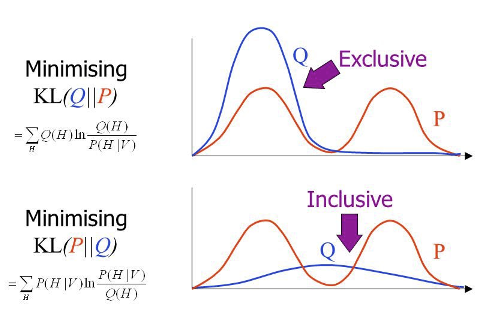
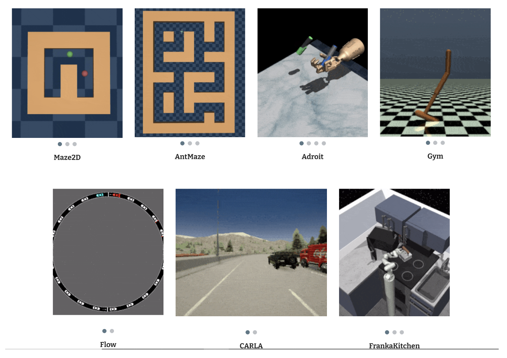

CSC2626 Imitation Learning for Robotics
Week 3: Offline/Batch Reinforcement Learning
Today’s agenda
• Reinforcement Learning Terminology
• Distribution Shift in Offline RL
• Offline RL with Policy Constraints
• Offline RL with Conservative Q-Estimates
RL Terminology
• Episodic vs Non-episodic
• Tabular vs Function Approximation
• Exploration vs Exploitation
• Model-based vs Model-free
• Policy Optimization vs Value Function Estimation
• On-policy vs Off-Policy
• Batch (Offline) vs Online
Episodic vs Non-episodic RL methods
Episodic : optimize expected reward-to-go for finite time horizon
\[
V_T^{\pi}(s_0) = \mathbb{E}_{a_t \sim \pi_t(a|s_t), s_{t+1} \sim p(s_{t+1}|s_t, a_t)} \left[ \sum_{t=0}^{T} r(s_t, a_t) \right]
\]
Often need to have a reset mechanism to bring back the system to state \(s_0\)
Non-episodic : optimize expected discounted reward-to-go for infinite time horizon, i.e. a task may go on forever, no resets
\[
V^{\pi}(s_0) = \mathbb{E}_{a_t \sim \pi(a|s_t), s_{t+1} \sim p(s_{t+1}|s_t, a_t)} \left[ \sum_{t=0}^{\infty} \gamma^t r(s_t, a_t) \right] \qquad \gamma \in (0, 1)
\]
Tabular vs Function Approximation Methods
Tabular : discretize states and actions, represent them as a grid, and compute a policy or value function directly on states and actions (typically can enumerate small number of states and actions)
Function approximation : discrete or continuous states and actions, associate a feature representation \(\phi(s, a)\) to each state action pair and compute a policy or value function in terms of features (typically useful for continuous or very large, but discrete, state-action spaces)
Exploration vs Exploitation in RL
Exploitation : act by using current estimates of dynamics and value function to improve task performance in the short term
Exploration : act to improve current estimates of dynamics and value function to improve task performance in the long-term, even if it hurts short-term performance
Model-based vs Model-free RL Methods
Model-based : estimate predictive models of the instantaneous reward as well as the dynamics model, and act by making value function predictions based on these models and optimizing the estimated value function. I.e. plan with “imagined” state transition and reward data.
Model-free : do not try to estimate models of reward or dynamics, but interact with the environment to optimize policy. Plan with real state transition and reward data.
Mixed : only trust your dynamics and reward model (imagined data) for a few steps in the near future, and then use real data.
Policy Optimization vs Value Function Estimation
Credit: John Schulman
On-policy vs Off-policy Methods
On-policy RL methods : improve the policy that acts on the environment using data collected from that same policy
Off-policy RL methods : improve the policy that acts on the environment using data collected from any policy
Batch (Offline) vs Online Methods
Online RL methods : Can collect data over multiple rounds. Data distribution changes over time.
Batch/Offline RL methods : Can collect data only once from any policy. Data distribution is stationary.
Batch (Offline) vs Online Methods
\(\mathbf{s} \in \mathcal{S}\) – discrete or continuous state
\(\mathbf{a} \in \mathcal{A}\) – discrete or continuous action
\(\tau = \{s_0, a_0, s_1, a_1, \ldots, s_T, a_T\}\) - trajectory
\(\underbrace{\pi(s_0, a_0, \ldots, s_T, a_T)}_{\pi(\tau)} = p(s_1) \prod_{t=0}^{T} \pi(a_t | s_t) p(s_{t+1} | s_t, a_t)\)
\(d_t^{\pi}(s_t)\) – state marginal of \(\pi(\tau)\) at \(t\)
\(d^{\pi}(s) = \frac{1}{1-\gamma} \sum_{t=0}^{T} \gamma^t d_t^{\pi}(s_t) \quad \text{– "visitation frequency"}\)
\(Q^{\pi}(s_t, a_t) = r(s_t, a_t) + \gamma \mathbb{E}_{s_{t+1} \sim p(s_{t+1} | s_t, a_t), a_{t+1} \sim \pi(a_{t+1} | s_{t+1})} \left[Q^{\pi}(s_{t+1}, a_{t+1})\right]\)
\(V^{\pi}(s_t) = \mathbb{E}_{a_t \sim \pi(a_t | s_t)} \left[Q^{\pi}(s_t, a_t)\right]\)
On-policy actor-critic with function approximation
update \(Q_\phi\) to decrease \(E_{s \sim d^{\pi_\theta}(s), a \sim \pi_\theta(a|s)} \left[\left(Q_\phi(s,a) - (r(s,a) + \gamma E_{\pi_\theta}[Q_\phi(s',a')])\right)^2\right]\)
update \(\pi_\theta\) to increase \(E_{s \sim d^{\pi_\theta}(s), a \sim \pi_\theta(a|s)} [Q_\phi(s,a)]\)
Off-policy actor-critic with function approximation
update \(Q_\phi\) to decrease \(E_{s \sim d^{\pi_\beta}(s), a \sim \pi_\beta(a|s)} \left[\left(Q_\phi(s,a) - (r(s,a) + \gamma E_{\pi_\theta}[Q_\phi(s',a')])\right)^2\right]\)
update \(\pi_\theta\) to increase \(E_{s \sim d^{\pi_\beta}(s), a \sim \pi_\theta(a|s)} [Q_\phi(s,a)]\)
Q-Learning/Fitted Q-Iteration with function approximation (off-policy)
update \(Q_\phi\) to decrease \(E_{s \sim d^{\pi_\beta}(s), a \sim \pi_\beta(a|s)} \left[\left(Q_\phi(s,a) - (r(s,a) + \gamma E_{\pi_\theta}[Q_\phi(s',a')])\right)^2\right]\)
update \(\pi_\theta\) to increase \(E_{s \sim d^{\pi_\beta}(s), a \sim \pi_\theta(a|s)} [Q_\phi(s,a)]\)
choose \(\pi\) according to: \(\pi(a_t | s_t) = \begin{cases} 1 & \text{if } a_t = \arg\max_{a_t} Q_\phi(s_t, a_t) \\ 0 & \text{otherwise} \end{cases}\)
Policy gradients (on-policy)
RL objective: \(\max_{\pi} \sum_{t=0}^{T} E_{s_t \sim d^{\pi}(s), a_t \sim \pi(a|s)} [\gamma^t r(s_t, \mathbf{a}_t)]\)
\(\qquad \qquad \qquad \qquad \qquad \qquad \qquad \uparrow\) exactly the same thing!
\[J(\theta) = E_{\tau \sim \pi_\theta(\tau)} \left[\sum_{t=0}^{T} \gamma^t r(s_t, a_t)\right] \approx \frac{1}{N} \sum_{i=1}^{N} \sum_{t=0}^{T} \gamma^t r(s_{t,i}, a_{t,i})\]
\[\nabla_\theta J(\theta) = E_{\tau \sim \pi_\theta(\tau)} \left[\nabla_\theta \log \pi_\theta(\tau) \sum_{t=0}^{T} \gamma^t r(s_t, \mathbf{a}_t)\right] \text{ simple algebraic derivation}\]
\[= E_{\tau \sim \pi_\theta(\tau)} \left[\left(\sum_{t=0}^{T} \nabla_\theta \log \pi_\theta(a_t | s_t)\right) \left(\sum_{t=0}^{T} \gamma^t r(s_t, \mathbf{a}_t)\right)\right] \text{ from definition of } \tau\]
Policy gradients (on-policy)
RL objective: \(\max_{\pi} \sum_{t=0}^{T} E_{s_t \sim d^{\pi}(s), a_t \sim \pi(a|s)} [\gamma^t r(s_t, \mathbf{a}_t)]\)
\(\qquad \qquad \qquad \qquad \qquad \nearrow\) exactly the same thing!
\(J(\theta) = E_{\tau \sim \pi_\theta(\tau)} \left[\sum_{t=0}^{T} \gamma^t r(s_t, a_t)\right] \approx \frac{1}{N} \sum_{i=1}^{N} \sum_{t=0}^{T} \gamma^t r(s_{t,i}, a_{t,i})\)
\(\nabla_\theta J(\theta) = E_{\tau \sim \pi_\theta(\tau)} \left[\nabla_\theta \log \pi_\theta(\tau) \sum_{t=0}^{T} \gamma^t r(s_t, \mathbf{a}_t)\right] \text{ simple algebraic derivation}\)
(REINFORCE gradient estimator)
Today’s agenda
• Reinforcement Learning Terminology
• Distribution Shift in Offline RL
• Offline RL with Policy Constraints
• Offline RL with Conservative Q-Estimates
QT-Opt (roughly: continuous-action Q-Learning)
VIDEO
QT-Opt (roughly: continuous-action Q-Learning)
Today’s agenda
• Reinforcement Learning Terminology
• Distribution Shift in Offline RL
• Offline RL with Policy Constraints
• Offline RL with Conservative Q-Estimates
Addressing Distribution Shift via Pessimism
Different Types of Policy Constraint Methods
Note: KL divergence is not symmetric

How should we evaluate offline RL methods
Evaluating Offline RL – D4RL
Evaluating Offline RL – D4RL

Standardized Benchmark for Offline RL
Value Function Regularization for Offline RL
Learning Lower-Bounded Q-values
The need for safe exploration in RL for robotics
When applying RL to robotics we need to guarantee that the algorithm will not visit unsafe states very often during learning.
The need for safe exploration in RL for robotics When applying RL to robotics we need to guarantee that the algorithm will not visit unsafe states very often during learning.
The need for safe exploration in RL for robotics
VIDEO VIDEO
When applying RL to robotics we need to guarantee that the algorithm will not visit unsafe states very often during learning.
Our proposed method:
The learned policy should be safe at each iteration, not just when optimization has converged
Our solution: Constrained Safety Critics (CSC)
\(\text{maximize}_{\theta} \mathcal{V}_{\text{task}}^{\pi_\theta}(s_0)\)
subject to \(\boxed{\mathcal{V}_{\text{accident}}^{\pi_\theta}(s_0) < \epsilon} \qquad\)
\(\text{KL}(\pi_\theta || \pi_{\text{prev}}) < \delta \qquad\)
Probability of an accident should be upper bounded
Problem: estimation errors for value function \(\mathcal{V}_{\text{accident}}^{\pi_\theta}(s_0)\) can make the constraint falsely confident
Fix: use the CQL update rule to guarantee that the probability of an accident is overestimated
\(\min_Q \alpha \mathbb{E}_{s \sim \mathcal{D}} \left[\log \sum_a \exp(Q(s,a)) - \mathbb{E}_{a \sim \hat{\pi}_\beta(a|s)} [Q(s,a)]\right] + \frac{1}{2} \mathbb{E}_{s,a,s' \sim \mathcal{D}} \left[\left(Q - \hat{B}^{\pi} \hat{Q}^k\right)^2\right] \Rightarrow \mathcal{V}_{\text{accident}}^{\pi_\theta}(s_0) \leq \hat{\mathcal{V}}_{\text{accident}}^{\pi_\theta}(s_0) < \epsilon\)
Conservative Safety Critics for Exploration, https://arxiv.org/abs/2010.14497 , Bharadhwaj, Kumar, Rhinehart, Levine, Shkurti, Garg
Results: task value vs safety